AI Software Management Ecosystem — Sber UserSoft
Role
Product Designer
Scope of Work
UI/UX for AI Agent, Software Card Redesign, Tone of Voice (ToV), Q&A Hub Design, and Request Flow Redesign.
Context
Process optimization for 300K+ employees during the migration to SberOS and MacOS M-series.
Interaction and key animations showcase of the updated User Soft v1.0
🏆 Results & Impact
-
•
~30% reduction in time spent searching and requesting software (validated by n=20 tests).
-
•
CSAT 4.8/5: Significant increase in loyalty due to transparent request statuses.
-
•
40% ticket deflection rate: Reduced support load via AI automation and Q&A hub.
-
•
Seamless migration: Frictionless transfer of employee IT profiles during the SberOS transition.
Problem & Research
The internal software catalog was perceived as a "black box". Complex forms with an abundance of technical fields caused cognitive overload, and the lack of prompt support forced employees to seek answers from colleagues. When replacing a device, restoring the workspace took up to 2 business days.
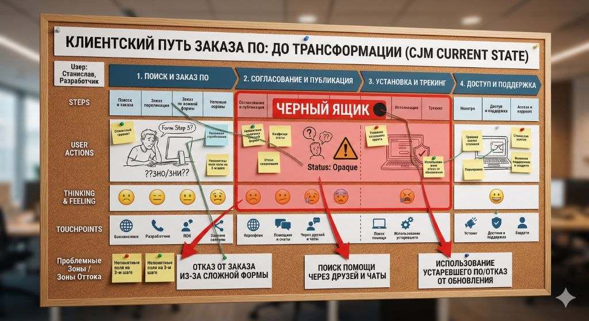
Fig 1. Customer Journey Map: Analysis of barriers and user drop-off points in the legacy system.
* Note: This illustration was generated using Gemini AI to convey the artifact's general structure. The text on the image is a mockup and contains generation artifacts. All actual data and insights are described in the case text below.
| Journey Stage | User Actions | Thoughts & Emotions | Barriers (Pain Points) |
|---|---|---|---|
| 1. Search & Request | Searches for software. Fills out the form, reaches step 3. | "What should I write in the justification? Which workstation type do I pick?" | Drop-off due to complex form. Confusion over technical fields (distribution, alternatives). |
| 2. Approval (Black Box) | Waits for Working Group and InfoSec approval. | "Where is my request? Why was it rejected?" | Lack of transparency. Unclear request statuses. Rejections due to bureaucracy. |
| 3. Installation & Tracking | Attempts to install or update the software. | "Where is the install button? Another error..." | Update drop-off. Fear of breaking the environment due to complex algorithms. |
| 4. Access & Support | Encounters an error, looks for a solution. | "I'll message Alex, IT support takes too long." | Shadow IT support. IT service overload, seeking help in personal chats. |
Quotes from the Field: What happened at the "dreaded Step 3" of the form
"I don't understand what to write in 'Business Justification'. InfoSec constantly rejects my request because they don't like the wording. Just give me an example!"
"How am I supposed to know if there is a 'Bank Alternative'? I just want to install the program for work. Why can't the system check this itself against the database?"
"I'm stuck on selecting 'Virtual/Standard Workstation'. I have no idea if I need a virtual layer. If I pick the wrong one, will my request be rejected a week later?"
"They rejected the publication because of the distribution link. I provided a link to our internal drive, but apparently, they need the official website. That wasn't written anywhere!"
Shipped Solutions
1. Software Card Redesign & Information Architecture
I reworked the card's composition, focusing on modularity and data density. My goal was to group technical parameters and statuses so users could instantly find what they needed.
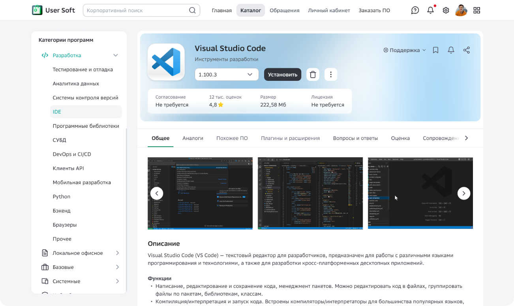
Fig 2. Modular software card design: reducing cognitive load on the user.
2. Q&A Community Hub (Discussions)
Introduced a public Q&A space within the software card. This created a self-learning knowledge base where answers from software owners are accessible to everyone, radically reducing the volume of routine support tickets.
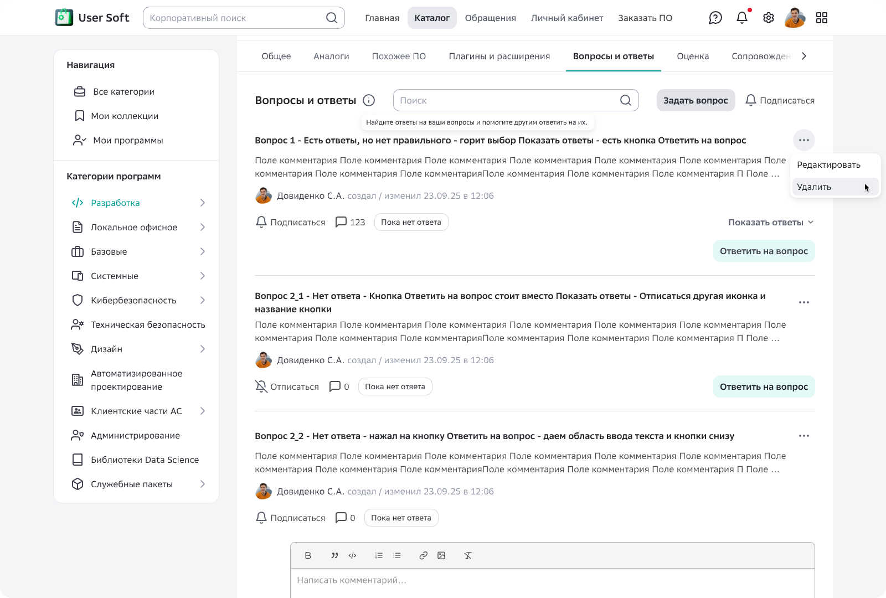
Fig 3. Q&A Section: crowdsourcing knowledge and reducing support load.
3. AI Agent & Tone of Voice
Designed the Conversational UX for a GigaChat-based assistant. I developed the Tone of Voice (system persona) and confirmation logic so that automated software installation felt like a reliable, user-controlled process.
Fig 4. AI Agent: a human-centric approach to complex automation.
4. Request Redesign (Bureaucracy as a Service)
I redesigned the interfaces for requesting and publishing software. Forms became cleaner, with smart validation for workstation types and contextual hints helping users avoid errors at the "dreaded step 3."
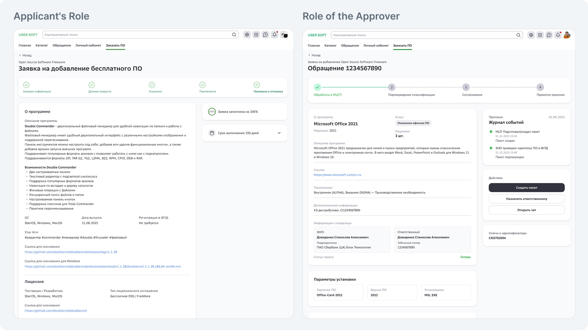
Fig 5. Form optimization: transforming a complex process into a clear sequence of steps.
5. "Magic" Restore (Profile Migration)
UX support for the one-click software restore feature. Thanks to backend integration (Persona system), the interface automatically prompts users to restore their familiar software stack on a new device.
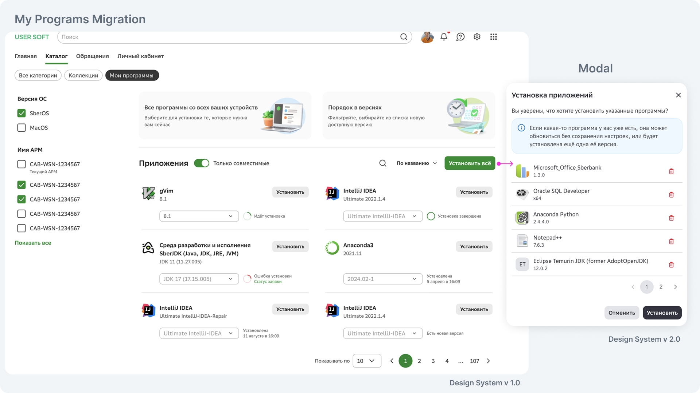
Fig 6. Seamless migration: a magical experience for workspace restoration.
Why It Works (Design Logic)
Hierarchy
The new software card architecture eliminated paralysis caused by data overload.
Reliability
The Agent's Tone of Voice and transparent request statuses built trust in the system.
Automation
Shifting from 'informing' to 'executing' (via the AI agent and migration tool) saved thousands of human hours.
Visual Communications
As part of the portal development, stories and banners were created to inform employees about updates and new features.
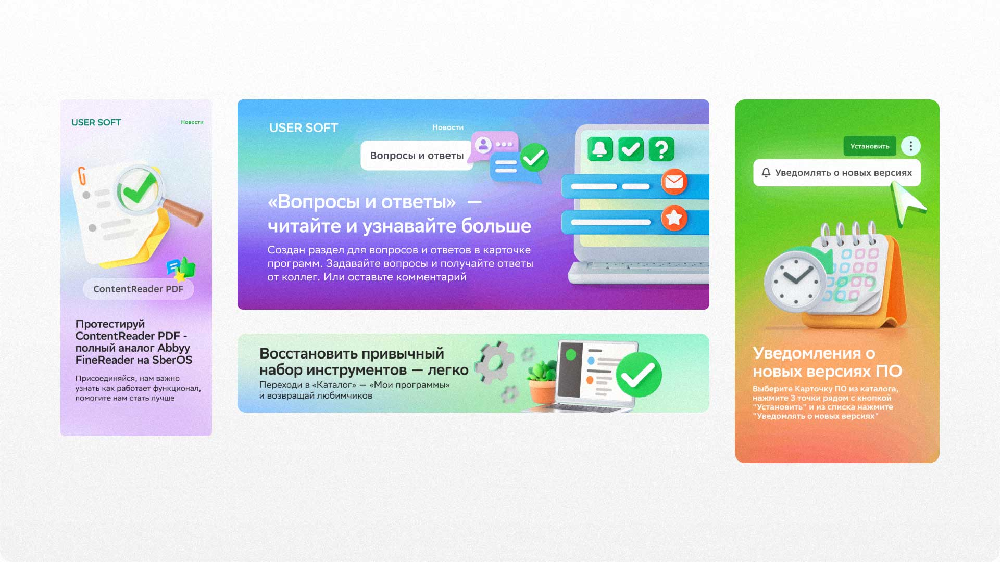
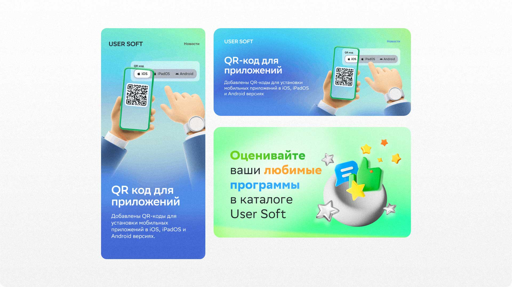
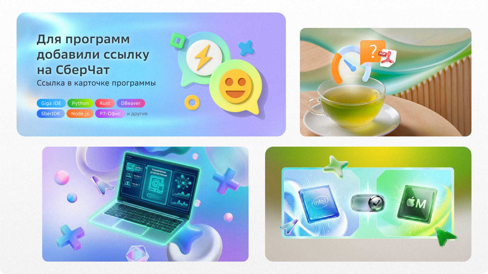
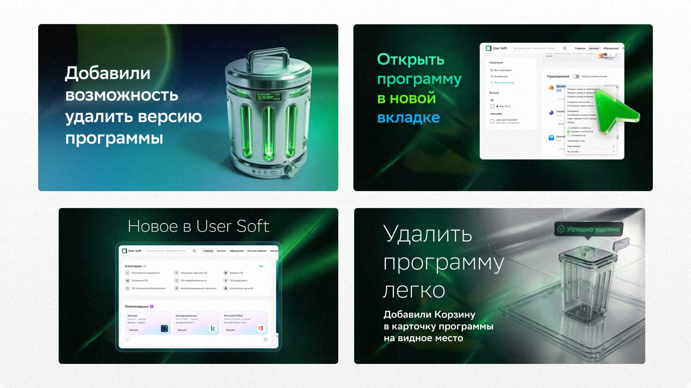
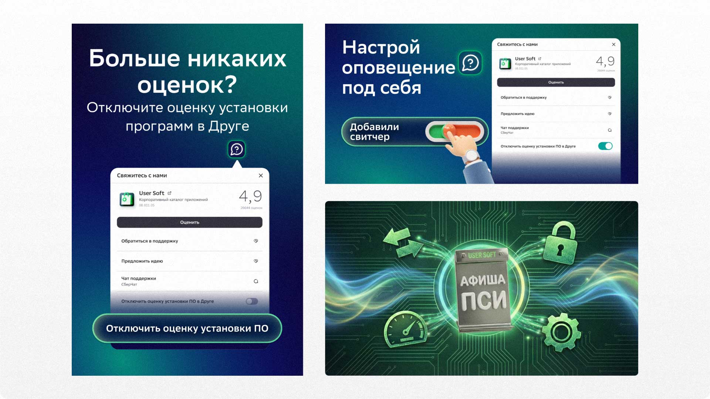
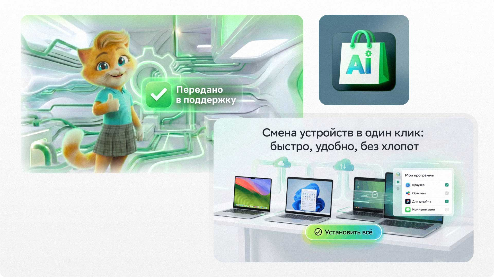
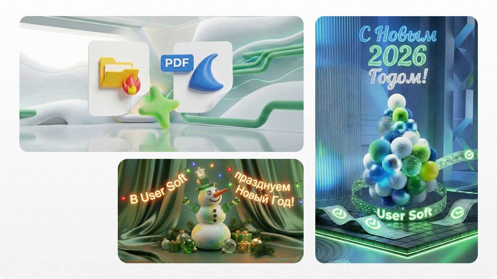
Additionally, banners for employee greetings and celebrations were designed for general and support chats, strengthening internal communication.
Reflection: Impact & Systemic Efficiency
In this project, my primary focus was on radically reducing friction within the user journey. My goal was to shift the paradigm from "informing" to "executing": where users previously had to navigate complex logic and wait for manual approvals, we now utilize AI agents and smart automation.
I strongly believe that if a process can be automated without compromising quality, it should be. This project serves as a testament to how a deep understanding of product logic allows for the creation of proactive interfaces, ultimately saving thousands of man-hours for both the business and its employees.